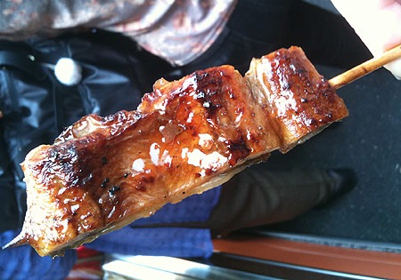
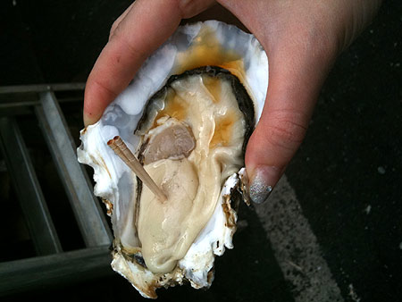
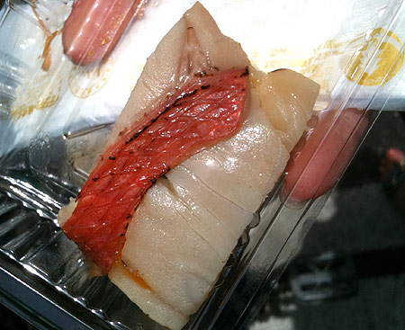
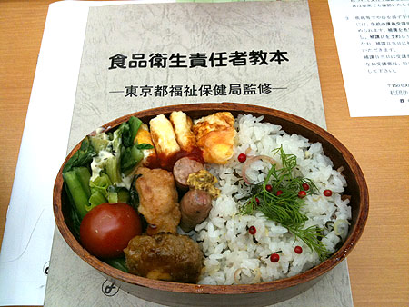
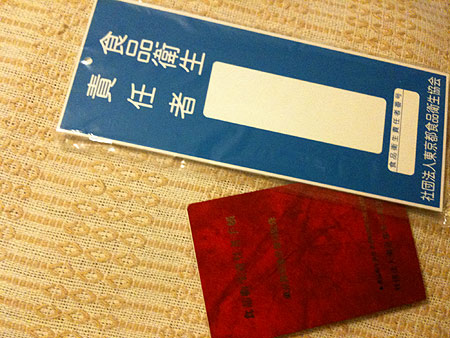
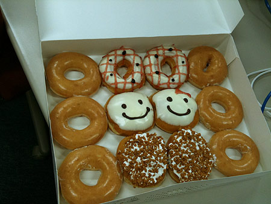
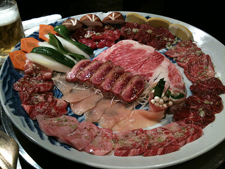

とあるイベントのゲストがペーパー夫妻。
このときも熱があるにもかかわらず、どーしてもテクニックをしりたいイベントだったので這って表参道。
パー子さんの元気っぷりに酔って、体調復活。帰りにシャンパーニュ飲んでくるとゆー暴挙。
ちょびっと記念撮影
あいかわらずポタリングにいそしんでいるわけですが。
丁度良い距離なのが築地。
とあるイベントのゲストがペーパー夫妻。
このときも熱があるにもかかわらず、どーしてもテクニックをしりたいイベントだったので這って表参道。
パー子さんの元気っぷりに酔って、体調復活。帰りにシャンパーニュ飲んでくるとゆー暴挙。
ちょびっと記念撮影
あいかわらずポタリングにいそしんでいるわけですが。
丁度良い距離なのが築地。
{kind=link}
{kind=link}

築地でジャパニーズピンチョス。「うなぎ串」100円。 うなぎは関東風も関西風も九州風も好きですよ。ひとりで鰻屋さんに入って肝吸い付きで鰻重を頼んだとき、 「あー、すっかり私はオトナになったのだなー」と思ったっけな。{kind=link}

岩牡蠣300円。小ぶりだけどうんまい。 店先で食べていたら、試食だと勘違いしたおじいちゃんがお金払わず食べて大騒ぎになってた。 「もごもごもごご」 「あっ！！！」 「もぐもぐも」 「300円！」 「もぐもぐも」{kind=link}

金目鯛の押し寿司。金目鯛とすし飯の間に半生の卵黄が入っていて、濃厚なうまみ！ 焼き鯖とドライトマトの押し寿司も気になった…と思ったら、楽天で売ってた。→ここ{kind=link}

食品衛生責任者講習会を受講。 席でおひるごはん。しかし、これも仕分対象になってるのかなー。無駄が多いうえに、きちんと学習させてないよ！寝ている人多し…。 最後にテストがあるっていうから、マジメにうけていた私は正直者… 0点でも資格はもらえます…（となりの人は0点ぽかった）{kind=link}

そんなわけで、よく飲食店にぶら下がっているプレートを手に入れて、いつでも飲食店経営ができるわけですがな。{kind=link}

気配り男子の気配りみやげ！社内騒然のCCドーナツ。チンしてしあわせ～{kind=link}

んで、女子焼肉会＋社長。 THE肉！っていうのを定期的に摂取しないとお肌に悪いような。どうなのかしら？ と思ったらこんなページがあった 野菜、炭水化物が多いとなんとなーくカサッとしてくる感じ。 こちらは但馬牛を使ってるとこだったのだけど、脂肪の融点が低くて、身体にも優しそう。 体調を崩してから「もしかして…もう脂っこいものはダメなお年頃になってしまったのかしら…」と思ってたのだけど、まだまだ最前線で戦えました。脂どんと来て！